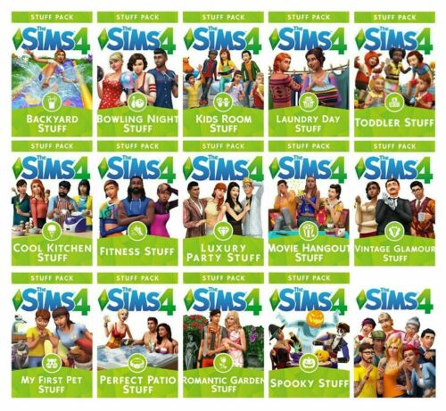
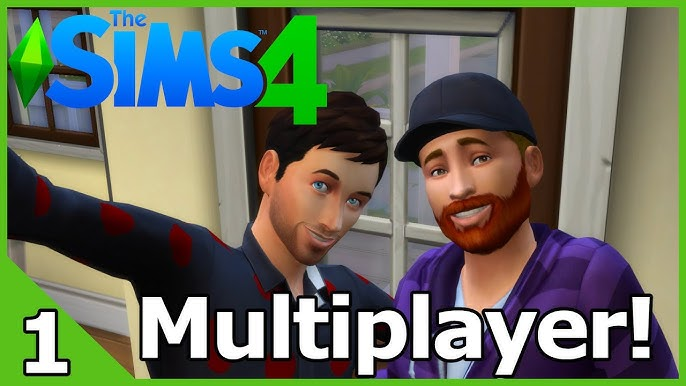

¿Qué son Los Sims 4?
Los Sims ofrecen un robusto sistema de creación de personajes que permite a los jugadores personalizar detalladamente la apariencia física, personalidad, aspiraciones y habilidades de sus Sims.

Construcción y diseño
Proporciona herramientas avanzadas para construir y diseñar hogares, permitiendo a los jugadores crear casas únicas y personalizadas.

Vida simulada
Los Sims tienen necesidades y deseos que los jugadores deben satisfacer para mantener su felicidad y bienestar. Incluye aspectos como relaciones sociales, empleo, habilidades, y actividades recreativas.

Expansiones, paquetes de juego y accesorios
Se han lanzado numerosos paquetes de expansión, paquetes de juego y accesorios que agregan contenido adicional, como nuevas profesiones, lugares, características y objetos para mejorar la experiencia de juego.
Multijugador
A diferencia de entregas anteriores, Los Sims 4 se centra principalmente en la experiencia para un jugador, aunque se pueden añadir mods multijugador.
Actualizaciones regulares
El juego ha recibido actualizaciones y parches regulares que introducen nuevas características, correcciones de errores y mejoras en la jugabilidad.
Estilo artístico
Presenta un estilo artístico más estilizado y caricaturesco en comparación con sus predecesores, lo que le confiere un aspecto visual único.
En resumen:
Los Sims 4 ofrece a los jugadores la oportunidad de crear y controlar virtualmente la vida de sus Sims, desde su nacimiento hasta su muerte, abordando una amplia gama de aspectos de la vida cotidiana.

Fecha: